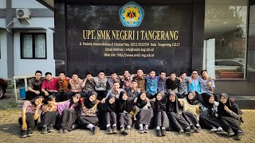

WEBSITE ARFIAN
"Dimana pun kamu berada, Tetaplah kamu selalu bersyukur"
|
|
|---|---|
| Beranda Tentang Saya Sekolah Lagu | |
SMK Negeri 1 Tangerang"about school profile"  search : Dokumentasi SMKN1TNG_001
SMKN 1 Tangerang merupakan salah satu Sekolah Menengah Kejuruan (SMK) negeri yang berada di Kota Tangerang, Provinsi Banten. Sekolah ini beralamat di Jalan Perintis Kemerdekaan II, Kelurahan Babakan, Kecamatan Tangerang, Kota Tangerang. SMKN 1 Tangerang merupakan satuan pendidikan kejuruan yang berada di bawah naungan pemerintah daerah dan memiliki akreditasi A. Dalam perkembangannya, SMKN 1 Tangerang memiliki sejarah pendidikan yang cukup panjang. Sekolah ini sebelumnya dikenal sebagai SMEA Negeri Tangerang dan kemudian berubah menjadi SMK Negeri 1 Tangerang pada tahun ajaran 1997/1998. Perubahan tersebut menjadi bagian dari perkembangan sekolah dalam menyesuaikan pendidikan kejuruan dengan kebutuhan dunia kerja dan perkembangan bidang keahlian. SMKN 1 Tangerang menyediakan berbagai kompetensi keahlian yang dapat membantu siswa mengembangkan pengetahuan dan keterampilan sesuai bidang yang diminati. Kompetensi keahlian yang tersedia meliputi Teknik Ketenagalistrikan, Teknik Jaringan Komputer dan Telekomunikasi (TJKT), Desain Komunikasi Visual (DKV), Pemasaran, Manajemen Perkantoran dan Layanan Bisnis (MPLB), serta Akuntansi dan Keuangan Lembaga (AKL). Selain pembelajaran di kelas, SMKN 1 Tangerang juga memberikan ruang bagi siswa untuk mengembangkan kompetensi dan prestasi melalui berbagai kegiatan. Hal tersebut terlihat dari keterlibatan siswa dalam berbagai bidang kompetisi, seperti teknologi web, jaringan komputer, desain grafis, ketenagalistrikan, administrasi perkantoran, akuntansi, dan pemasaran. Sekolah juga memiliki LSP-P1 yang berkaitan dengan sertifikasi kompetensi kerja pada bidang Bisnis Manajemen, Teknologi Informasi dan Komunikasi, serta Teknik Ketenagalistrikan. "Infografi SMKN1TNG sangat luar biasa
|
Tautan Eksternal |
|
(Copyright by arfian209@gmail.com, 2026) |
|